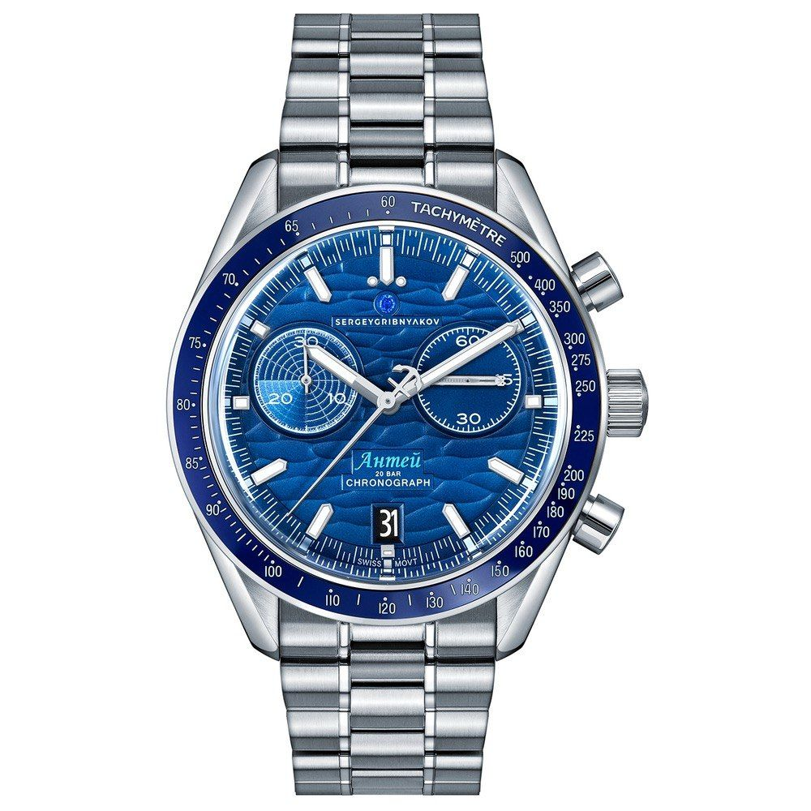
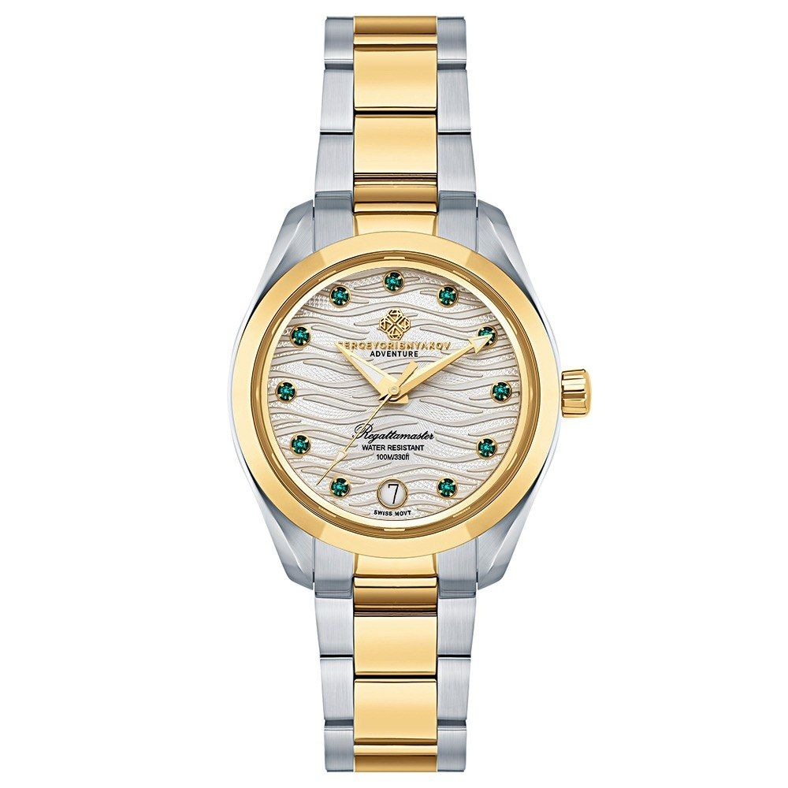
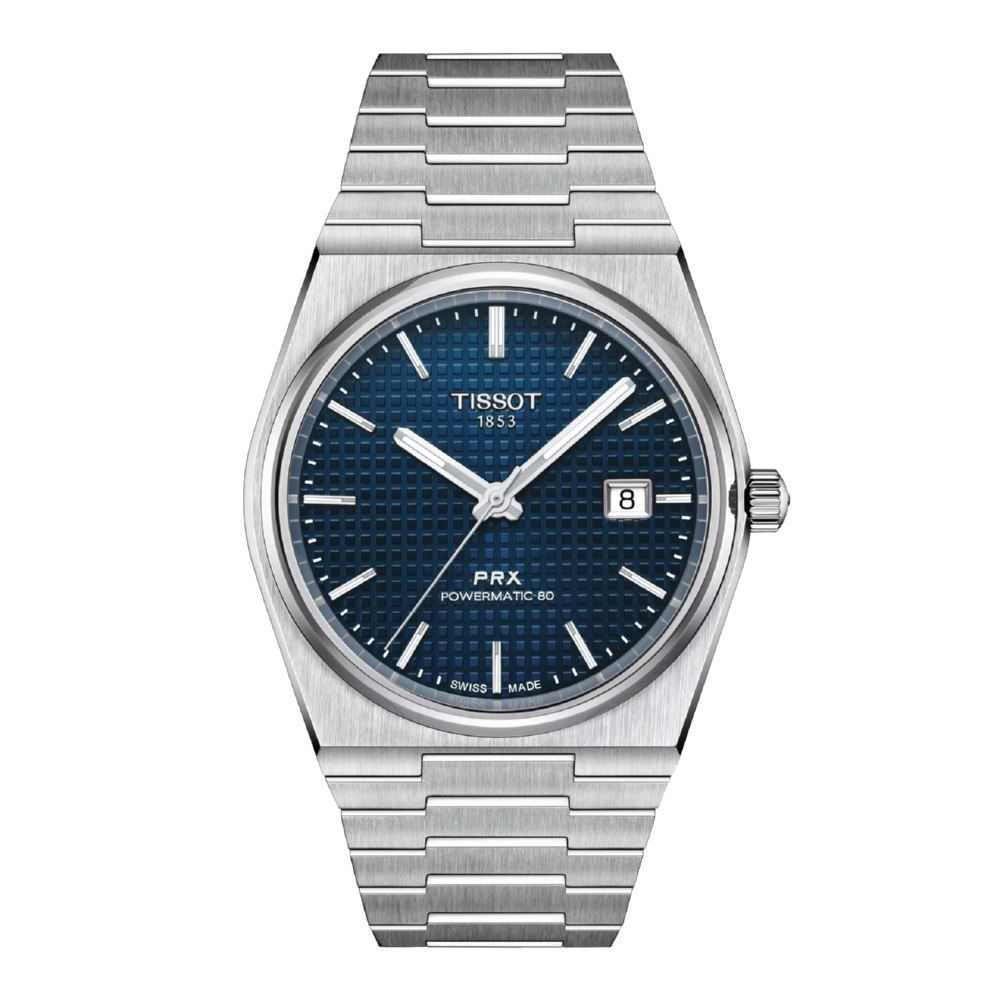
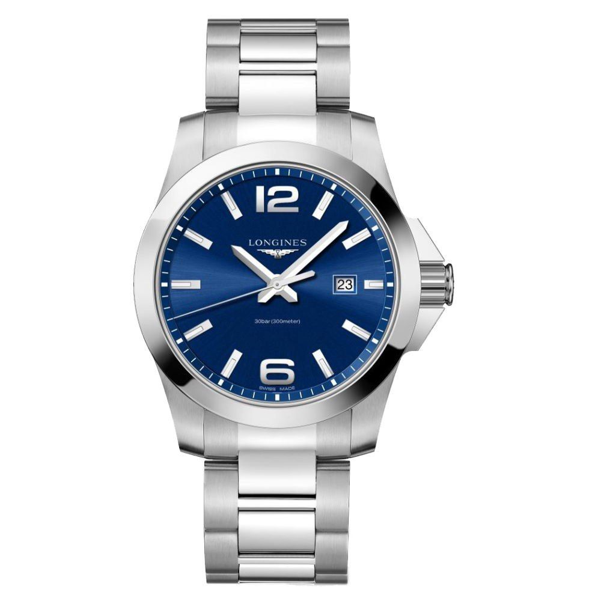

Часы как подарок: почему настоящая ценность измеряется не временем, а историей
Что подарить мужчине, который уже имеет всё? Что можно подарить на день рождения человеку, для которого важны качество, статус и индивидуальность? Что подарить на свадьбу,…

Что подарить мужчине, который уже имеет всё? Что можно подарить на день рождения человеку, для которого важны качество, статус и индивидуальность? Что подарить на свадьбу, чтобы вещь сохранила память о важном моменте на десятилетия?
Ответ часто оказывается неожиданным: часы. Недаром говорят, что с возрастом у мальчиков становятся дороже игрушки. Автомобили, гаджеты, коллекционные предметы — всё это отражает характер мужчины. Но особое место среди таких вещей занимают часы. Это единственный аксессуар, который одновременно соединяет практичность, эстетику, инженерное искусство и философию времени.
Хорошие часы — это давно не просто прибор для измерения минут. Это часть образа человека, его характера и жизненной позиции. Именно поэтому часы остаются одним из самых значимых подарков: что подарить мужчине на день рождения, юбилей или важное событие — вопрос, который требует не случайного выбора, а понимания личности владельца.
Почему часы – это больше, чем аксессуар?
Почему одни часы становятся семейной реликвией, а другие забываются через несколько лет? Ответ — в истории бренда, качестве исполнения и идее, которая стоит за изделием. Например, часы Rolex давно стали символом достижений и личного успеха. Их выбирают не только за точность, но и за легенду, связанную с исследовательскими экспедициями, спортом и профессиональными достижениями. А Patek Philippe строит философию вокруг наследия: знаменитый принцип бренда говорит о том, что часы покупаются не просто для себя, а для передачи следующему поколению.
Именно поэтому вопрос «что подарить на свадьбу» приобретает новый смысл: иногда лучший подарок — это предмет, который будет сопровождать семью десятилетиями.
Механика или кварц: что выбрать?
Главный вопрос при выборе часов — какой механизм станет сердцем подарка?
Механические часы — это мир традиций, мастерства и эмоций. Их ценят не только за точность, но и за сложность создания. Внутри работает миниатюрный механизм, собранный мастерами, где каждая деталь имеет значение. Именно поэтому такие бренды, как Audemars Piguet, Vacheron Constantin и Jaeger-LeCoultre, воспринимаются как вершина часового искусства. Механика — выбор человека, который ценит историю, традиции и ощущение связи с мастером.


Если смотреть рационально, кварцевые часы часто выигрывают по практичности. Они точнее, неприхотливее и не требуют сложного обслуживания. Именно поэтому бренды вроде Seiko и Citizen создали множество моделей, которые стали эталоном надёжности. Здесь нет вопроса «что лучше». Есть вопрос: что подходит именно этому человеку?
Корпус, стекло и материалы: детали, которые определяют качество
Почему одни часы выглядят достойно спустя десятилетия, а другие быстро теряют привлекательность? Ответ — в материалах.
Большинство качественных часов используют нержавеющую сталь высокого уровня. Например, Rolex применяет собственную Oystersteel, известную высокой устойчивостью к коррозии.
Современные производители также используют титан, керамику и карбон. Эти материалы особенно популярны в спортивных моделях, где важны лёгкость и прочность.
Не менее важно стекло. Лучшим вариантом считается сапфировое стекло: оно устойчиво к царапинам и используется в часах высокого класса. Минеральное стекло остаётся хорошим компромиссом между ценой и надёжностью. Яркий пример — легендарные ударопрочные модели Casio G-SHOCK.
Какие часы выбрать: классика, спорт или дизайн?
Как понять, какой стиль подходит мужчине?Условно часы можно разделить на три направления:
- классические часы выбирают люди, которые ценят сдержанность и статус. Это модели для костюма, деловых встреч и особых случаев.
- спортивные часы подходят активным людям. Например, Rolex Cosmograph Daytona стали легендой благодаря связи с автоспортом, а G-SHOCK известны своей экстремальной прочностью.
- дизайнерские часы — выбор тех, кому важна индивидуальность. Такие бренды, как Gucci, Bvlgari и Cartier, превращают часы в элемент стиля и художественного высказывания.


Цена или ценность: что действительно важно?
Можно ли купить хорошие часы без огромного бюджета? Да. Главная ошибка — выбирать часы только ради известного имени. Настоящий ценитель всегда заметит качество, историю и соответствие личности владельца. Иногда лучше выбрать менее раскрученный бренд с сильной инженерией, чем копию знаменитой модели.
Часы — это не демонстрация цены. Это демонстрация вкуса. Так что подарить человеку, который ценит время? Возможно, самый правильный ответ — подарить не просто часы.
Подарить память.
Подарить символ достижения.
Подарить вещь, которая будет сопровождать человека в важных моментах жизни.
Именно поэтому часы остаются одним из самых универсальных подарков: что можно подарить на день рождения, что подарить мужчине, что подарить на свадьбу — вопрос меняется, но ценность настоящих часов остаётся неизменной. Потому что хорошие часы измеряют не только время.
Они измеряют историю человека…